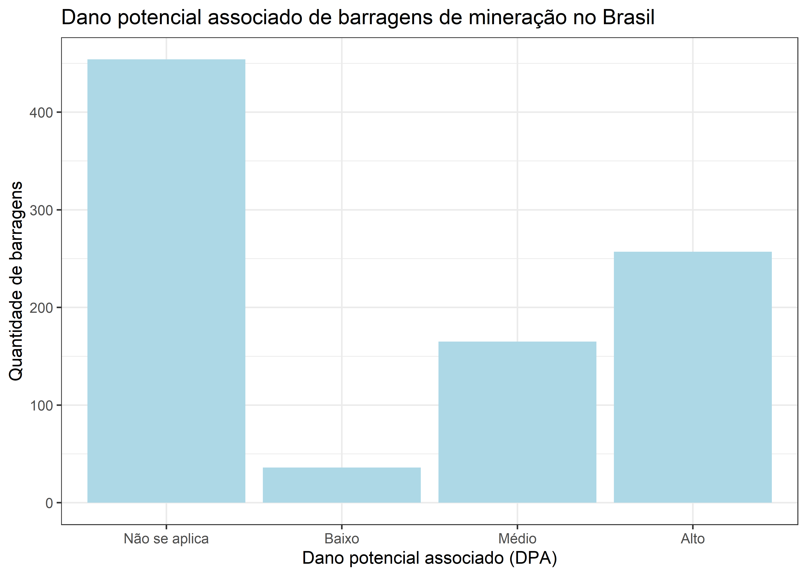

# Carregar pacotes:
library(janitor)
library(tidyverse)
library(readxl)Informações sobre as barragens
ABSTRACT
…..
Objetivos
Este relatório tem como objetivo apresentar funcionalidades do R Markdown e do Quarto, utilizando dados públicos sobre barragens de mineração no Brasil.
Os objetivos específicos da análise são:
- fazer uma tabela das barragens por estado;
- fazer um gráfico do número de barragens por categoria de dano potencial associado;
Materiais e métodos
A base de dados disponibilizada pelo SIGBM - Sistema de Gestão de Segurança de Barragem de Mineração apresenta dados referentes à Barragens de Mineração no território brasileiro.
Carregando os pacotes
Download e leitura da base
Download
## ----download-data------------------
## # Fazer download da base de dados do dia atual:
## # url para baixar os dados
url_request <- "https://app.anm.gov.br/SIGBM/Publico/ClassificacaoNacionalDaBarragem/ExportarExcel"
##
## # cria a pasta dados (se não existir)
fs::dir_create("dados")
##
## # funcão que baixa os dados
httr::POST(url_request, httr::write_disk("dados/sigbm.xlsx", overwrite = TRUE))Leitura
## ----load-data-----------------
# Importar a base de dados:
# ler os dados baixados
sigbm <- read_xlsx("dados/sigbm.xlsx", skip = 4) |>
clean_names()Data de atualização da base
# ----- data de atualização -----
data_atualizacao_sigbm <- read_xlsx("dados/sigbm.xlsx",
col_names = FALSE,
n_max = 1) |>
pull() |>
str_extract(":.*-") |>
str_remove(":") |>
str_remove("-") |>
str_trim()Barragens de mineração no Brasil
A base do SIGBM foi obtida no dia 23/08/2022, e apresentou informações referentes a 911 barragens.
Tabela
## ----tabela-top-10-------------------------
sigbm |>
count(uf, sort = TRUE) |>
slice(1:10) |>
select(`Estado` = uf, `Número de barragens` = n) |>
knitr::kable(caption = "Dez estados brasileiros com mais barragens cadastradas no SIG-BM")| Estado | Número de barragens |
|---|---|
| MG | 346 |
| MT | 152 |
| PA | 114 |
| BA | 82 |
| SP | 68 |
| RO | 36 |
| GO | 22 |
| AP | 18 |
| MS | 18 |
| AM | 15 |
Gráfico
## ----plot-dpa---------------------------
sigbm |>
count(dano_potencial_associado) |>
mutate(
dano_potencial_associado = if_else(
dano_potencial_associado == "N/A",
"Não se aplica",
dano_potencial_associado
),
dano_potencial_associado = factor(
dano_potencial_associado,
levels = c("Não se aplica", "Baixo", "Médio", "Alto")
)
) |>
ggplot() +
aes(x = dano_potencial_associado, y = n) +
geom_col(fill = "lightblue") +
theme_bw() +
labs(x = "Dano potencial associado (DPA)", y = "Quantidade de barragens",
title = "Dano potencial associado de barragens de mineração no Brasil")
Tabelas
top10uf <- sigbm |>
count(uf, sort = TRUE) |>
slice(1:10) |>
select(`Estado` = uf, `Número de barragens` = n)- Com knitr:
top10uf |>
knitr::kable()| Estado | Número de barragens |
|---|---|
| MG | 346 |
| MT | 152 |
| PA | 114 |
| BA | 82 |
| SP | 68 |
| RO | 36 |
| GO | 22 |
| AP | 18 |
| MS | 18 |
| AM | 15 |
- Com gt:
# top10uf |>
# gt::gt()- Com DT:
# top10uf |>
# DT::datatable()- Com reactable:
# top10uf |>
# reactable::reactable()- Com flextable:
# top10uf |>
# flextable::flextable()Código inline
A base mtcars possui 32 carros. As colunas presentes na base são mpg, cyl, disp, hp, drat, wt, qsec, vs, am, gear, e carb.
Equações com Latex
A equação da média é \({\text{Média}=\frac {a_{1}+a_{2}+\cdots +a_{n}}{n}}\), sendo usada amplamente para análises descritivas.
\[{\text{Média}=\frac {a_{1}+a_{2}+\cdots +a_{n}}{n}}\]
Adicionar referências
Outros estudos utilizaram dados do SIGBM, como LEÃO; SANTIAGO (2022)
Esse relatório foi feito usando R (rstats?) e os pacotes tidyverse (wickham2019?), janitor (FIRKE, 2021), ggplot2 (WICKHAM, 2016).
knitr::write_bib(file = "packages.bib")Referência cruzada
Na Seção 2 , descrevemos os objetivos deste documento.
Nos objetivos 2, descrevemos os objetivos deste documento.
Na Figura 1, vemos que a maior quantidade de barragens …
Parâmetros
params$estado[1] "SP"sigbm_filtrado <- sigbm |>
filter(uf == params$estado)Daqui em diante, o relatório será baseado nas barragens do estado SP. Existem 68 barragens cadastradas no SIGBM neste estado.
sigbm_filtrado |>
count(minerio_principal, uf, sort = TRUE) |>
slice(1:10) |>
knitr::kable()| minerio_principal | uf | n |
|---|---|---|
| Argila | SP | 31 |
| Areia | SP | 10 |
| Argila Arenosa | SP | 10 |
| Granito | SP | 5 |
| NA | SP | 3 |
| Argila Caulinítica | SP | 2 |
| Rocha Fosfática | SP | 2 |
| Areia Industrial | SP | 1 |
| Calcário Dolomítico | SP | 1 |
| Caulim | SP | 1 |
Referências
FIRKE, S. janitor: Simple Tools for Examining and Cleaning Dirty Data. [s.l: s.n.].
LEÃO, S. R.; SANTIAGO, A. M. DOS S. Cenário das barragens de rejeito: conhecer para evitar novas catástrofes. Ambiente & Sociedade, v. 25, 2022.
WICKHAM, H. ggplot2: Elegant Graphics for Data Analysis. [s.l.] Springer-Verlag New York, 2016.